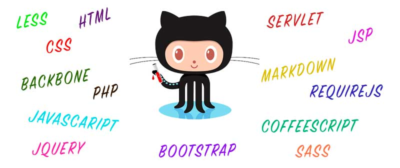

{{ post.excerpt }}
Continue ReadingThe Web Course Information
{% if paginator.page == 1 %}

{% else %}
 {% endif %}
{% endif %}
{% for post in paginator.posts %}
{% endif %}
subscribe via RSS
{% endfor %}
{% endif %}
{{ post.excerpt }}
Continue Readingsubscribe via RSS
{% endfor %}